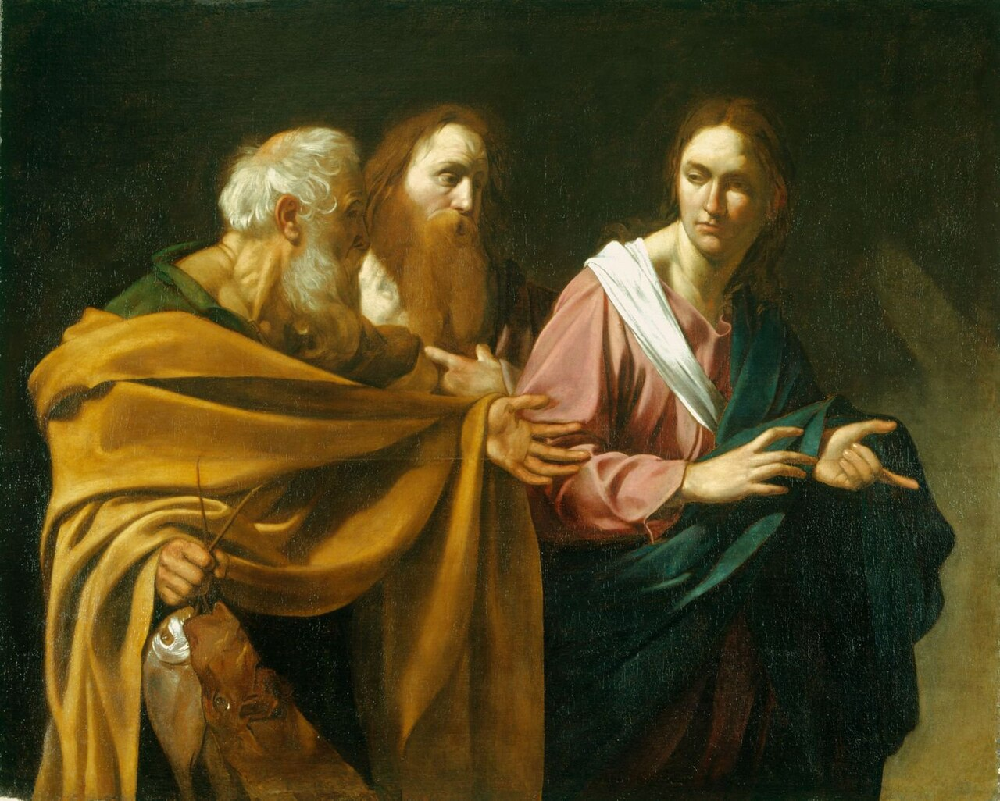
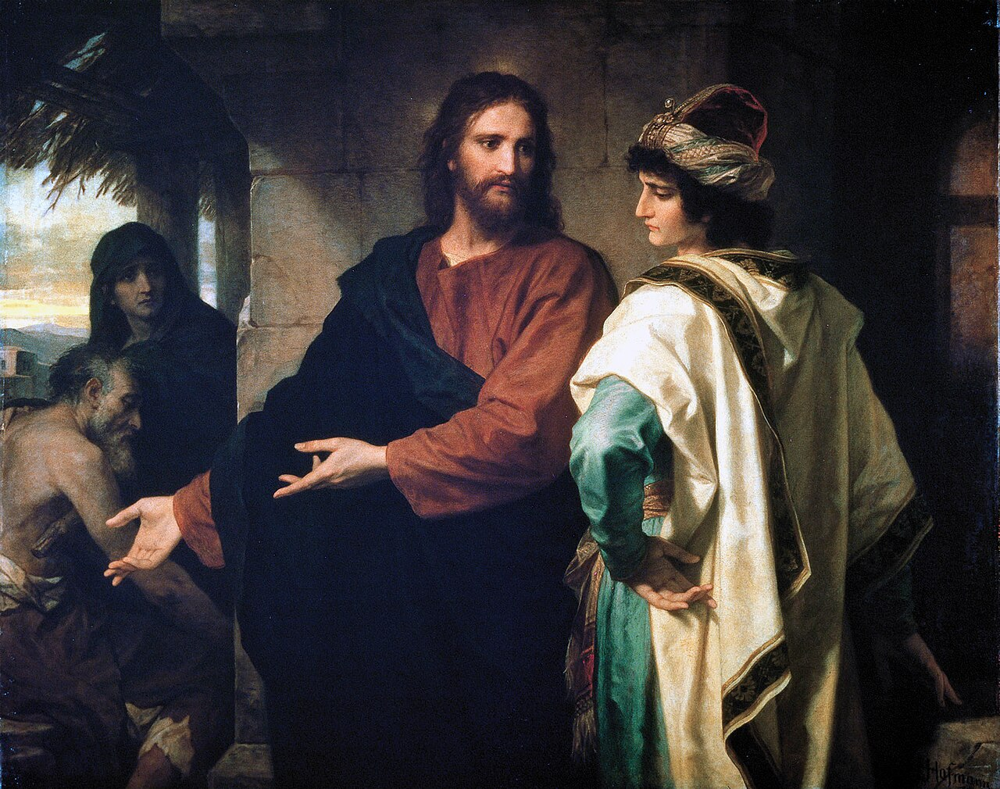

查考
可一:14 ～ 20
耶穌向這些門徒潛力的人說些什麼？那是什麼意思？
他們對耶穌的回應是什麼？
對這些人而言，作門徒的代價有哪些？
耶穌說要成為祂的門徒要有那些特性？
閱讀以下經文，耶穌說要成為祂的門徒要有那些特性？
當你注意這些門徒特點時，思考這些問題：
耶穌在這段經文中真正要表達的是什麼？
祂的要求很高嗎？
在隨從每一個命令時，重要的心態是什麼？
（你可以如下圖，畫一個表來完成這部分學習）
| 經文 | 當時狀況 | 意義 | 心態 |
|---|---|---|---|
| 太十六:24 | |||
| 路十四:27 | |||
| 十四:26 | |||
| 十四:33 | |||
| 約八:31、32 | |||
| 十三:34、35 | |||
| 十五:8 |
耶穌有十二個門徒，今天我們是否可能成為門徒？
查考太二十八:19、20耶穌的命令如何幫助我們回答這個問題？
寫出你認為被呼召作基督門徒的目的。
耶穌的門徒被呼召作 ....
查考這些經文，看看門徒如何回應耶穌的呼召，以及作門徒要付出什麼代價。


查考下列經文，再次注意這些門徒的標誌。你可以實際的做些什麼以在生活中應用神的話？
| 經文 | 實際應用 |
|---|---|
| 遵守神的話— 約八:31、32 | |
| 結果子— 約十五:8 | |
| 背十字架— 路十四:27 | |
| 捨己— 太十六:24 | |
| 基督居首位— 路十四:26 | |
| 捨棄一切— 路十四:33 | |
| 神的愛— 約十三:34、35 |
你有否遵行任何現代或前人的教訓？你欣賞他們什麼？
你認為一個人要跟隨耶穌可能嗎？
如果你遇見一個人他想跟隨耶穌，你會期望他們是怎樣的人？